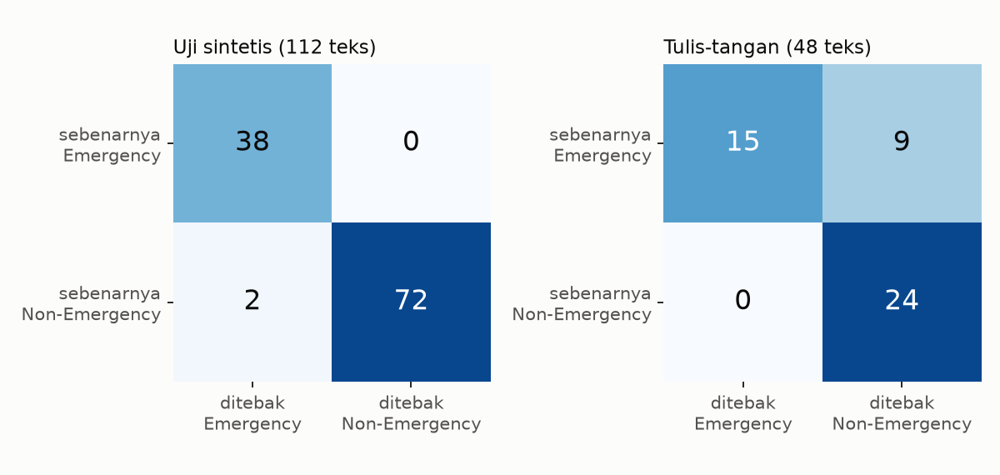

Confusion Matrix: TP, TN, FP, dan FN¶
Info materi
Tingkat kesulitan: Pemula–menengah. Estimasi waktu: 75 menit.
Jenis kode: snippet edukatif (examples/level-5-evaluation/01_confusion_matrix.py) dan pembuat gambar (gambar_level5.py). Model rujukan Level 5: Linear SVM (preprocessing dasar, TF-IDF unigram, C=1), dilatih pada 452 teks pengembangan.
Tujuan pembelajaran¶
- Menjelaskan empat hasil prediksi biner: TP, TN, FP, dan FN, pada konteks Emergency / Non-Emergency.
- Menghitung keempatnya dari dua array, dengan tangan dan dengan scikit-learn.
- Membaca confusion matrix dan memeriksa bahwa jumlahnya sama dengan jumlah data.
- Menjelaskan mengapa FN dan FP berbeda konsekuensinya pada tanggap darurat.
Prasyarat¶
- Level 4, terutama Perbandingan Model dan Label Encoding (Emergency = 1).
Pengantar dan motivasi¶
Satu angka seperti "akurasi 0,92" menyembunyikan jenis kesalahan. Dua model dapat sama-sama akurat 92%, tetapi satu salah dengan melewatkan pesan darurat, satu lagi salah dengan terlalu banyak "alarm palsu". Confusion matrix memisahkan kedua jenis kesalahan itu, dan semua metrik di Level 5 dihitung darinya.
Konsep dasar¶
Dengan Emergency sebagai kelas positif:
| Ditebak Emergency | Ditebak Non-Emergency | |
|---|---|---|
| Sebenarnya Emergency | TP (true positive): pesan darurat, terdeteksi | FN (false negative): pesan darurat, terlewat |
| Sebenarnya Non-Emergency | FP (false positive): bukan darurat, salah ditandai | TN (true negative): bukan darurat, benar diabaikan |
Cara mengingat: kata kedua (positive/negative) adalah tebakan model; kata pertama (true/false) menyatakan apakah tebakan itu benar. FN = tebakan negatif yang salah.
Jumlah keempatnya harus sama dengan jumlah data:
Penjelasan mendalam¶
Konsekuensi FN dan FP¶
| Kesalahan | Arti pada sistem darurat | Konsekuensi |
|---|---|---|
| FN | Pesan yang mungkin mendesak tidak masuk antrean peninjauan | Respons terlambat atau tidak ada; paling serius |
| FP | Pesan biasa masuk antrean peninjauan | Waktu dan sumber daya peninjau terbuang; terlalu banyak FP membuat peninjau lelah dan akhirnya mengabaikan peringatan |
Keduanya harus diukur. Mana yang lebih diprioritaskan bergantung pada kapasitas respons dan harus ditetapkan melalui evaluasi dan validasi; spesifikasi proyek menegaskan agar tidak menetapkan ambang produksi tanpa itu.
Urutan sumbu¶
confusion_matrix pada scikit-learn secara bawaan memakai urutan label terurut:
[[TN, FP], [FN, TP]] untuk label [0, 1]. Pada tabel di halaman ini, kita
memakai labels=[1, 0] agar Emergency berada di baris dan kolom pertama; ini hanya
perbedaan tampilan. Selalu periksa urutan sebelum membaca angkanya.
Matriks ternormalisasi¶
Membagi tiap baris dengan jumlah barisnya menghasilkan proporsi per kelas sebenarnya: baris Emergency menunjukkan TP/(TP+FN) = recall. Pembagian itu berguna bila kelas tidak seimbang.
Cara kerja atau alur proses¶
flowchart LR
A["y sebenarnya<br/>(0/1)"] --> C["bandingkan<br/>elemen demi elemen"]
B["y prediksi<br/>(0/1)"] --> C
C --> D["hitung 4 kombinasi<br/>TP, TN, FP, FN"]
D --> E["metrik:<br/>akurasi, presisi, recall, F1"]Contoh sederhana¶
Sepuluh teks, 4 Emergency. Model menemukan 3 Emergency dan salah menandai 1 Non-Emergency: TP = 3, FN = 1, FP = 1, TN = 5. Total \(3+1+1+5 = 10\). ✓
Contoh dalam konteks Twitter/X kebencanaan¶
- TP: "Tolong, air sudah masuk rumah kami..." ditebak Emergency.
- FN: "Astaga dapur tetangga meledak, apinya udah ngejalar ke atap..." ditebak Non-Emergency (terlewat).
- FP: "Butuh bantuan: ada yang bisa ajarin Python dasar?" ditebak Emergency.
- TN: "Musim hujan sudah dekat, waspada banjir ya" ditebak Non-Emergency.
Praktik Python¶
Berkas: examples/level-5-evaluation/01_confusion_matrix.py. Bagian awal berkas
menyiapkan data lewat nlp_hub.proyek.siapkan(), melatih Linear SVM (model_rujukan), dan menghitung prediksi
pada uji sintetis (112 teks) dan tulis-tangan (48 teks).
Bagian 1 — Menghitung dengan tangan¶
def hitung_manual(y_benar, y_pred):
tp = int(((y_benar == 1) & (y_pred == 1)).sum()) # Emergency, ditebak Emergency
tn = int(((y_benar == 0) & (y_pred == 0)).sum()) # Non-Emergency, ditebak Non-Emergency
fp = int(((y_benar == 0) & (y_pred == 1)).sum()) # Non-Emergency, salah ditebak Emergency
fn = int(((y_benar == 1) & (y_pred == 0)).sum()) # Emergency, terlewat
return tp, tn, fp, fn
tp, tn, fp, fn = hitung_manual(d.y_uji, pred_uji)
print(f"uji sintetis: TP={tp} TN={tn} FP={fp} FN={fn} | total={tp + tn + fp + fn} = {len(d.y_uji)}")
tn2, fp2, fn2, tp2 = confusion_matrix(d.y_uji, pred_uji, labels=[0, 1]).ravel()
print("sama dengan scikit-learn:", (tp, tn, fp, fn) == (tp2, tn2, fp2, fn2))
Setiap baris membuat topeng boolean ((y_benar == 1) & (y_pred == 1)) dan menjumlahkannya. int(...) mengubah hasil NumPy menjadi bilangan biasa. ravel() meratakan matriks 2 × 2 menjadi urutan TN, FP, FN, TP.
Interpretasi: pada 112 teks uji, 38 Emergency ditemukan semuanya (FN = 0), tetapi 2 teks Non-Emergency salah ditandai (FP = 2). Totalnya 112, sesuai jumlah data (cara memeriksa: jumlah keempat sel = jumlah baris). Perhitungan manual sama dengan scikit-learn.
Bagian 2 — Tabel berlabel¶
def tabel(y, p):
m = confusion_matrix(y, p, labels=[1, 0]) # urutan [Emergency, Non-Emergency]
return pd.DataFrame(m, index=["sebenarnya Emergency", "sebenarnya Non-Emergency"],
columns=["ditebak Emergency", "ditebak Non-Emergency"])
print("UJI SINTETIS (112 teks)")
print(tabel(d.y_uji, pred_uji).to_string())
print("\nTULIS-TANGAN (48 teks)")
print(tabel(d.y_tangan, pred_tangan).to_string())
UJI SINTETIS (112 teks)
ditebak Emergency ditebak Non-Emergency
sebenarnya Emergency 38 0
sebenarnya Non-Emergency 2 72
TULIS-TANGAN (48 teks)
ditebak Emergency ditebak Non-Emergency
sebenarnya Emergency 15 9
sebenarnya Non-Emergency 0 24

Interpretasi:
- Uji sintetis: hampir sempurna: tidak ada Emergency yang terlewat; dua alarm palsu.
- Tulis-tangan: 15 dari 24 pesan Emergency terdeteksi, 9 terlewat (FN = 9), dan tidak ada alarm palsu (FP = 0). Pola kesalahannya berbalik: pada data bergaya baru, kesalahannya hampir seluruhnya FN. Ini kesalahan jenis yang paling mahal pada tugas ini.
- Satu angka seperti akurasi akan menyembunyikan pembalikan ini: akurasi uji sintetis (110/112 = 0,982) dan tulis-tangan (39/48 = 0,812) tidak memberi tahu jenis kesalahannya.
Bagian 3 — Melihat teks yang salah¶
def contoh(df, y, p, y_benar, y_tebak, n=2):
idx = np.where((y == y_benar) & (p == y_tebak))[0][:n]
return [df["text"].iloc[i][:75] for i in idx]
print("FN (Emergency terlewat), tulis-tangan:")
for t in contoh(d.tangan, d.y_tangan, pred_tangan, 1, 0, 3):
print(" -", t)
print("FP (Non-Emergency ditandai Emergency), uji sintetis:")
for t in contoh(d.uji, d.y_uji, pred_uji, 0, 1, 2):
print(" -", t)
np.where(...) mengambil indeks teks yang memenuhi kombinasi (label sebenarnya, tebakan); [:n] membatasi jumlahnya; teks dipotong 75 karakter agar muat.
FN (Emergency terlewat), tulis-tangan:
- Astaga dapur tetangga meledak, apinya udah ngejalar ke atap. Siapa punya AP
- Mohon info: jalur Puncak km 12 baru saja longsor, 2 mobil keseret ke jurang
- Banjir bandang!!! jembatan putus, desa kami terisolasi, stok obat diabetes
FP (Non-Emergency ditandai Emergency), uji sintetis:
- Butuh bantuan: ada yang bisa ajarin Python dasar? #Cuaca
- BUTUH BANTUAN: ADA YANG BISA AJARIN PYTHON DASAR?
Interpretasi: tiga FN adalah pesan darurat jelas yang ditulis dengan kosakata di luar templat
(meledak, keseret, terisolasi). Kedua FP memuat "butuh bantuan" tetapi bertopik Python: model menangkap
kata kunci, bukan situasi, persis kegagalan yang diperingatkan di definisi label proyek.
Dua FP itu juga duplikat dengan variasi huruf kapital. Analisis kesalahan lebih
mendalam ada di halaman Error Analysis.
Skrip terpadu¶
Fungsi metrik_emergency di examples/nlp_hub/eksperimen.py menghitung semua metrik turunan; hitungan
dasarnya sama dengan Bagian 1 dan diuji di examples/tests/test_eksperimen.py.
Kesalahan umum dan debugging¶
| Gejala | Penyebab | Perbaikan |
|---|---|---|
| FN dan FP tertukar | Membaca baris sebagai tebakan, bukan sebenarnya | Periksa label sumbu; cetak tabel berlabel |
ravel() menghasilkan urutan tak terduga |
labels tidak ditetapkan |
Beri labels=[0, 1] agar urutan TN, FP, FN, TP pasti |
| Kelas positif tertukar | Emergency dikodekan 0 | Pastikan Emergency = 1 (Level 4) |
| Jumlah sel tidak sama dengan jumlah data | Label di luar labels diabaikan |
Periksa nilai unik y |
| Hanya akurasi dilaporkan | Menyembunyikan jenis kesalahan | Laporkan FN, FP, TP, TN |
Kelebihan dan keterbatasan¶
Kelebihan: menunjukkan jenis kesalahan; dasar semua metrik; mudah diperiksa. Keterbatasan: untuk satu ambang saja (ambang lain, matriks lain); hitungan absolut sulit dibandingkan antar-dataset berukuran berbeda; tidak memberi tahu mengapa model salah (perlu analisis teks).
Latihan bertahap¶
- Konseptual. Mengapa "Emergency terlewat" disebut false negative, bukan false positive?
- Membaca tabel. Berapa TP, FN, FP, TN pada uji tulis-tangan, dan berapa total datanya?
- Menghitung. Hitung akurasi tulis-tangan dari confusion matrix.
- Debugging.
confusion_matrix(y, p).ravel()menghasilkan(24, 0, 9, 15), dan Anda membaca "TP = 24". Apa kesalahannya? - Analisis. Mengapa FP = 0 pada tulis-tangan tidak berarti model baik?
Kunci jawaban dan pembahasan¶
Jawaban 1
Tebakan model adalah "negatif" (Non-Emergency), dan tebakan itu salah (sebenarnya Emergency). False menyatakan tebakan salah; negative menyatakan tebakannya.
Jawaban 2
TP = 15, FN = 9, FP = 0, TN = 24; total 48.
Jawaban 3
(TP + TN)/N = (15 + 24)/48 = 39/48 ≈ 0,8125.
Jawaban 4
Urutan bawaan ravel() untuk label [0, 1] adalah TN, FP, FN, TP, jadi (24, 0, 9, 15) berarti TN = 24, FP = 0, FN = 9, TP = 15. Nilai 24 pertama adalah TN, bukan TP.
Jawaban 5
FP = 0 hanya berarti tidak ada alarm palsu; model yang jarang memberi alarm juga akan FP = 0. Di sini 9 dari 24 pesan darurat justru terlewat (FN = 9). Kedua kesalahan harus dibaca bersama.
Kuis singkat¶
1. Apa isi sel kanan-atas pada tabel sebenarnya × ditebak di halaman ini?
Jawaban
FN (Emergency yang ditebak Non-Emergency).
2. Apa rumus yang menghubungkan keempat sel dengan jumlah data?
Jawaban
\(TP + TN + FP + FN = N\).
3. Mengapa FN dianggap lebih mahal pada tanggap darurat?
Jawaban
Pesan darurat yang terlewat dapat berarti respons terlambat; FP hanya membuang sumber daya peninjauan (meski juga harus diukur).
Ringkasan¶
- Confusion matrix memisahkan TP, TN, FP, FN; jumlahnya sama dengan jumlah data.
- Uji sintetis: TP 38, TN 72, FP 2, FN 0. Tulis-tangan: TP 15, TN 24, FP 0, FN 9.
- Kesalahan pada data bergaya baru hampir seluruhnya FN (pesan darurat terlewat).
- Dua FP berasal dari kata kunci "butuh bantuan" pada topik Python.
Glosarium istilah baru¶
- Confusion matrix
- Tabel hitungan hasil prediksi menurut label sebenarnya dan tebakan.
- TP / TN / FP / FN
- True positive / true negative / false positive / false negative.
- Kelas positif
- Kelas yang ingin ditemukan (Emergency).
- Alarm palsu
- Istilah informal untuk false positive.
Referensi¶
- Dokumentasi scikit-learn,
confusion_matrix: https://scikit-learn.org/stable/modules/generated/sklearn.metrics.confusion_matrix.html (dokumentasi resmi; menyebut urutantn, fp, fn, tpdariravel()untuk klasifikasi biner). - Imran, M., Castillo, C., Diaz, F., & Vieweg, S. (2015). Processing social media messages in mass emergency: A survey. ACM Computing Surveys, 47(4), artikel 67. DOI: 10.1145/2771588 (survei akademik).
Materi berikutnya¶
Accuracy, Precision, Recall, F1, dan Rata-rata Makro/Mikro/Berbobot